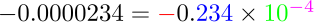
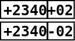
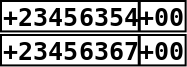

This page is going to shake your belief in digital computers.
Let's start with a shocking example due to Hilbert.
EXAMPLE: We
all know that a real symmetric nonsingular matrix has a symmetric
inverse. Consider the $10\times 10$ matrix with entries
$$
a_{ij} = \frac{1}{i+j}\quad i,j=1,...,10.
$$
Clearly, it is a real symmetric matrix. It is also
nonsingular (though it may not be immediately obvious). Compute
its inverse using Gauss-Jordan method.
SOLUTION:
]h=:%+/~ 1+i.10
]%. h
Is it (even approximately) symmetric?
Once a student of ISI sent me an worried email about an
inexplicable behaviour of R. The next example is based on his email.
EXAMPLE:
x = 1:100
i = 57/41 * 41
i
x[i]
x[57]
While such extreme examples are rare in practice, their existence makes
us worry about the accuracy of numerical methods.
Other than programming bugs, there are two main reasons behind
errors in a numerical method:
approximations used in the algorithm (e.g., approximating a
function by its tangent at a point),
inability of the computer to store real numbers exactly.
In this page we shall focus our attention on this second point.
We shall need to understand first how computers store number.
Generally computers use two methods to store and process numbers: fixed
point and floating point. In either method we have to first
choose a radix or base with respect to which the numbers
will be represented. In most computers (including IBM PCs and Sun) the
radix is 2 ({\em i.e.,} binary), in some machines 4 or 8 or even 16 is
used as the radix. There is a computer in Russia that uses 3 as its
radix. Most calculators use 10 as their radix. In this note we shall
mostly use 10 as the radix, because we, human beings, are more used to
the decimal system than the binary system.
Here we have a number of digits and the decimal point is fixed
in one place. For instance, we may use 4 digits and fix the decimal place
between the second and third digits, like this:
$$
\pm\dig\dig\bullet~~\dig\dig
$$
We write $-3.4$ as $-03.40$ in this system. The number $-345$ cannot
be represented in this system, nor the number $0.0001.$ In the
first case we have a fixed overflow and in the second a fixed
underflow. Note that the prefixes over- and under- depend on the
absolute value of the number, and not on its sign.
Clearly, we can represent exactly $2\times10^4-1 =
19999$ distinct numbers in this way (why did we subtract 1?). Notice
that these 19999 numbers are all equispaced in the number line at
intervals of $0.01.$
In fixed point arithmetic, we first try to perform the arithmetic as
usual. If the answer can be represented in the fixed point system, then we
output the result. Otherwise, we produce an overflow or underflow error,
as appropriate. For instance, $02.30\times00.10 = 00.23,$ but
$02.30\times00.01$ produces fixed underflow.
Thus, a fixed point arithmetic operation either produces the correct answer or
produces an error message. It never gives approximate answers. Most
general purpose computers allow only one type of fixed point numbers,
namely, integers. Here the (binary) point is fixed at the rightmost end,
like this:
$$
\pm\dig\dig\dig\dig\bullet
$$
Actually, integers usually come in more than one flavours, depending on the
number of digits used. In C, for instance, we have intshort and long. Special purpose computers (like
the computer chip inside mobile phones) use fixed point numbers where the
point is somewhere in between.
A fixed point system is characterised by 3 things: the radix, the number
of digits and the location of the point.
Here we do not hold the point fixed in one place, rather we let it
float. For example, if we make the decimal point "float"
just before the leftmost nonzero digit, then we shall
convert all the numbers $-234$, $-23.4$ and $-0.0000234$ to $0.234.$
In the floating point representation the numbers are expressed
like
$$\begin{eqnarray*}
-234 & = & -0.234 \times 10^3,\\
-23.4 & = & -0.234 \times 10^2,\\
-0.0000234 & = & -0.234 \times 10^{-4}.
\end{eqnarray*}$$
The following line shows the 4 different parts of the floating
point representation:

Parts of the floating point
representation
These 4 parts are:
the sign (red minus above)
a radix (the green 10 above).
the mantissa (the blue 234)
the exponent (the purple $-4$)
A typical floating point system uses radix $2$ (though
calculators use 10). A number $m$ of digits is allocated to
store the mantissa. Similarly, a number $e$ of digits are
allocated for storing the exponent. A single bit stores the sign.
Thus, if the radix is is $r=10$ and
$m=4,e=2$ the number
$2.34$ is stored with mantissa $2340$ and exponent $01.$
Similarly, the number $0.00234$ has mantissa $2340$ and exponent
$-03.$ The mantissa always starts with a nonzero digit (unless the
number is zero.) If a number has mantissa $M$ and exponent $E$
then it is $Mr^{E}.$
EXAMPLE: How many distinct numbers can be stored using
$m$ mantissa digits and $e$ exponent digits if the radix is
$r?$
SOLUTION:
It is
$$
4\times (r^{m+e} - r^e+1).
$$
It is because, there are $r^{m+e}$ possible digit patterns, of which
$r^e$ correspond to 0, and hence contribute only one distinct
number. The multiplier 4 is because both the mantissa and the exponent can
be positive or negative.
Notice that to store a floating point number we need space for $m+e$
digits and two signs. To store a fixed point number with $k$ digits
we need space for the $k$ digits plus one sign. If $r=2$ then
each sign takes the space of one digit. Thus, if we have space for $L$ digits
then we can exactly represent either $2^{L}-1$ fixed point numbers, or
$2^L-2^e+1$ floating point numbers. Thus, we can represent fewer
floating point numbers exactly if $e>1.$ However, there is one great
advantage of floating point numbers: they cover a much wider range. If
$r=10,m=3,e=2$ the smallest positive number that can be represented
exactly is $10^{-99}$ while the largest is $999\times10^{99}.$
Using $r=10,k=m+e=5,$ the corresponding minimum and maximum are
$\{10^{-5},0.99999\}$ if the point is at the left extreme, and
$\{1,99999\}$ if the point is at the right extreme.
Also, the numbers
that can be represented exactly in floating point are not regularly spaced
like their fixed point counterparts. The numbers close to zero are densely
spaced, while the numbers with large magnitudes are sparse. This irregular
spacing is in a sense compatible with the way we, human beings, perceive
numbers. When talking about large numbers we tend to ignore large errors,
while for small numbers even slight errors count. In other words, we are
more interested in relative errors than absolute errors.
A person who hardly minds if an air fare increases by Rs 100, is often
greatly annoyed to pay an extra Rs 5 for a dozen bananas!
This similarity of floating point numbers with our love for relative
errors makes floating point numbers ideal for approximation. This is done
in two standard ways. The more popular way (used by IBM PCs and Sun) is
called rounding towards zero. If a number cannot be represented
exactly in a floating point format, then approximate it by the number
nearest to it towards zero. The other method is called truncation.
Here we just chop off the part of the mantissa that we cannot store.
This is done only for the mantissa. If the exponent turns out to be too
large, then we have a floating overflow. Note that we do not have a
floating underflow. If the exponent is too small, the number is
approximated by zero.
Suppose that we have measured a length up to the nearest
centimetre and are reporting the length in metres. A typical
number could be 2.23. Had we measured it up to the nearest
millimetre, then the answer could have been 2.231. Thus, we human
beings usually report as many decimal places as we are sure
about. As a result, 2.230 and 2.23 have a difference. In the second
case, we have measured up to the nearest millimetre, and in the
first case only up to nearest centimetre.
A computer, however, does not follow this norm. It allocates a
fixed number of digits and fills up unnecessary digits with 0's.
Thus, both 2.23 and 2.230 will be stored as 2.23000, if the
computer is using 6 digits. In the first case, the last three 0's
are just trash, and in the second case, the last two 0's are
trash.
Trash digits may be nonzero also. For example, if you halve the
length, then in both the cases you'll get 1.11500. The last two
0's are of course trash. But even the 5 is trash in the first case.
The concept of trash digits is present in both fixed point and
floating point representations.
Consider the numbers 23.406 and 0.000023456. In both these
numbers the significant digits are 2,3,4,0,6. These are the
numbers in the decimal (or binary) expansion starting with
the leftmost nonzero digit. If you want
to report these two numbers up to 5 decimal places, then you'll
write 23.40600 and 0.00002, respectively. But if you report them
up to 5 significant digits, then you'll write 23.406 and 0.000023406.
A digit may be both significant as well as trash. In the length
halving example, we had 1.11500. If we had measured up to the
nearest centimetre, then the result is correct only up to 3
significant digits (the trailing 500 being trash).
As we have already pointed out both fixed point and floating
point representations can accommodate only finitely many
numbers. It is quite possible where performing some arithmetic
operation (addition, multiplication etc), the inputs are
representable, but the output is not. For fixed point
representations, the computer prints an error message in this
case. But, for floating point representations, the computer
produces approximate answers. We shall discuss the process for
addition and subtraction first.
EXAMPLE:
Suppose that we want to add 23.4 with 0.0234 where both are
represented in the $(r=10,m=4,e=2)$ format:
$$\begin{eqnarray*}
23.4 & = & 0.234\times 10^{2}\\
0.0234 & = & 0.234\times 10^{-2}
\end{eqnarray*}$$
These will be stored like:

While adding, the smaller exponent will be increased until it
equals the larger exponent:
$$
0.234\times 10^{-2} = 0.000234\times 10^{2}.
$$
This is stored like:
Notice how the trailing 3 and 4 have been swept out. So we now
have
$$
0.0002\times 10^{2}.
$$
This is where the error enters.
Finally, the computer adds the two stored mantissas to get
$$
(0.2340 + 0.0002)\times10^2 = 0.2342\times 10^2,
$$
which is stored as:
This example should make one thing clear:
If a small number is added (or subtracted) from a large number,
then the small number suffers loss of digits.
This should also show that the digital addition function is not
associative: Subtracting lots of small numbers from a large
number one at a time produces different result from subtracting
the sum of the small numbers from the large number.
Here is an example that will show another pitfall.
EXAMPLE:
We want to subtract 0.23456354 from 0.23456367. We are using
radix 10 $e=2$ and and $m=8,$ which is large enough to hold these
numbers exactly:

The exact subtraction produces 0.00000013.
Now, while storing in floating point representation, the decimal
point will float to the left of the first nonzero digit to
produce
$$
0.13\times 10^{-6}.
$$
This will be stored as
Notice that all the trailing 0's are just trash digits.
The pitfall is:
If a subtraction performed between two numbers that match up to
many significant digits, then the result contains many trailing
trash digits.
EXAMPLE:
Mathematically,
$$
\frac{1-\cos^2 x}{x^2} = \frac{\sin^2 x}{x^2},
$$
whenever $x\neq 0.$ Also, the limit as $x\rightarrow0$
is $1.$ Try out the computation for $x=5\times
10^{-10}.$
SOLUTION:
x=5e-10
(1-cos(x)^2)/x^2
sin(x)^2/x^2
EXAMPLE:
We know that one root of $ax^2 + bx + c = 0$ is
$$
\frac{-b+\sqrt{b^2-4ac}}{2a}.
$$
Use this formula to find the root of $3x^2 + 10^9 x + 100
= 0.$ Then evaluate the quadratic at this root. Explain what you find.
SOLUTION:
a = 3; b = 1e9; c = 100
r = function() (-b+sqrt(b^2-4*a*c))/(2*a)
q = function(x) a*x*x + b*x + c
q(r())
Here the root suffers terribly from loss of significant digits. A way to remedy
this is to use the alternative formula:
$$
\frac{2c}{-b-\sqrt{b^2-4ac}}.
$$
In R
It is difficult to give the exact procedures used for
multiplication and division of floating point numbers. But the
following pitfall is pretty obvious:
Multiplication by large number (or division by a small number)
will amplify the error.
EXAMPLE:
We continue with the last example. Now we focus on the other root:
a = 3; b = 1e9; c = 100
r = function() (-b-sqrt(b^2-4*a*c))/(2*a)
q = function(x) a*x*x + b*x + c
q(r())
The approximate nature of floating point arithmetics is a source
of headache for numerical analysists. Roughly speaking, there are
four ways to attack this problem:
Express the operations mathematically, and work with them
instead of the ideal operations. This is impossibly complicated,
owing to the fact that the operations are not even
associative. So people have come up with somewhat better-behaved
approximations that are less accurate. The hope is to produce an
upper bound for the error. Unfortunately, the resulting upper
bounds are usually atrociously large.
Add a little random jitter to the inputs, and study the
effect on the output. This is usually easy to do, and provides
an idea about the instability of the algorithm.
Perform interval arithmetic, i.e., consider each input as an
interval (e.g., 3.2 metre up to nearest centimetre
is $[3.15,3.25)$ metre). The resulting mathematics turns
out to be complicated, though some successes have been
reported.
Identifying high-level symptoms that potentially lead to
high numerical error.
We have seen that division by a very small number is a potential
source of numerical error. By analogy it seems natural to expect
that inverting a nearly singular matrix should also pose similar
problem. The high-level symptom that we are talking about here is
"nearly singular". We need to devise a way to measure it
quantitatively. The first guess that comes to mind is the
absolute value of the determinant. But that is not a good
measure. For instance, an $n\times n$ diagonal matrix with all
entries equal to $\frac 12$ has determinant $2^{-n}\rightarrow
0,$ yet we have no numerical instability in inverting it.
A better way to measure "nearness to singularity" is via the
condition number:
Generally, we want to avoid larger condition numbers. But this
does not mean that matrices with large condition numbers are
always bad. It means matrices with low condition numbers are good.
See Theorem 2.7.1 of Golub's book Matrix Computations for a more
rigourous statement.
One consequence of this is that orthogonal matrices are nice
things to work with, because if $A$ is orthogonal, then its
condition number must be 1.
This is why $QR$ decomposition is the preferred way to solve
the least squares problem, instead of the normal equations.
Comments
To post an anonymous comment, click on the "Name" field. This
will bring up an option saying "I'd rather post as a guest."